Komisi dihitung dari tumpukan nota
Akhir bulan nota dikumpulin, dihitung satu-satu per kapster. Lama, dan beda angka sedikit aja langsung jadi debat.
Dengan BarberApp: Komisi kehitung tiap transaksi. Kapster bisa cek sendiri dari HP-nya.
Kasir + pembukuan barbershop
Satu aplikasi buat ngurus seluruh barbershop: kasir, komisi & gaji kapster, laci, antrian & booking, stok, absensi, sampai laporan keuangan yang bisa di-export ke PDF & Excel. Cukup dari HP.

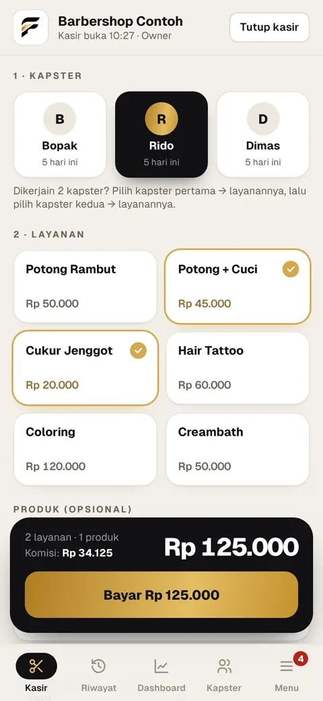
All-in-one
Semua bagian saling nyambung. Satu transaksi di kasir langsung ngisi komisi, stok, laci, data pelanggan, sampai laporan keuangan.
Yang bisa kamu tinggalin:
Kenal sama ini?
Masalah yang sering dialami owner barbershop. Kelihatannya kecil, tapi kejadian tiap hari.
Akhir bulan nota dikumpulin, dihitung satu-satu per kapster. Lama, dan beda angka sedikit aja langsung jadi debat.
Dengan BarberApp: Komisi kehitung tiap transaksi. Kapster bisa cek sendiri dari HP-nya.
Ganti shift, uang dipakai beli galon, owner ambil buat keperluan pribadi. Gak dicatat, ujungnya selisih dan saling curiga.
Dengan BarberApp: Buka-tutup kasir tercatat. Selisih kelihatan atas nama kasir yang nutup.
Uang masuk kelihatan banyak. Tapi setelah komisi, modal produk, sewa, dan listrik, sisanya berapa? Gak ada yang bisa jawab pasti.
Dengan BarberApp: Laba rugi jadi sendiri. Biaya rutin diingetin sebelum jatuh tempo.
Produk kejual gak dicatat, sampo dan tonic kepakai ke pelanggan tanpa hitungan. Tahu-tahu habis pas lagi dibutuhin.
Dengan BarberApp: Stok berkurang otomatis, bahan terpakai tercatat, ada peringatan stok menipis.
Gak jelas siapa giliran siapa. Booking lewat chat bikin jadwal bentrok, dan yang udah booking malah lupa datang.
Dengan BarberApp: Antrian per kapster dengan estimasi menit. Booking dari link, jam bentrok otomatis ditutup.
Data pelanggan cuma ada di HP kapster. Pas kapsternya keluar, pelanggan langganannya ikut pindah.
Dengan BarberApp: Data pelanggan tersimpan di toko. Kartu stempel & voucher bikin mereka punya alasan balik.
Fitur lengkap
Geser gambar di tiap fitur buat lihat layarnya.
01 · Kasir & pembayaran
Tiap transaksi langsung jadi omzet, komisi, stok, dan catatan keuangan. Kasir gak perlu nyatet apa-apa lagi.
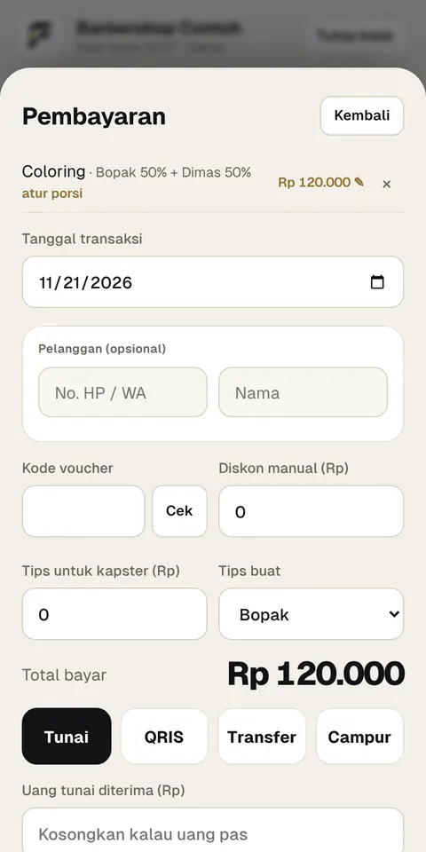
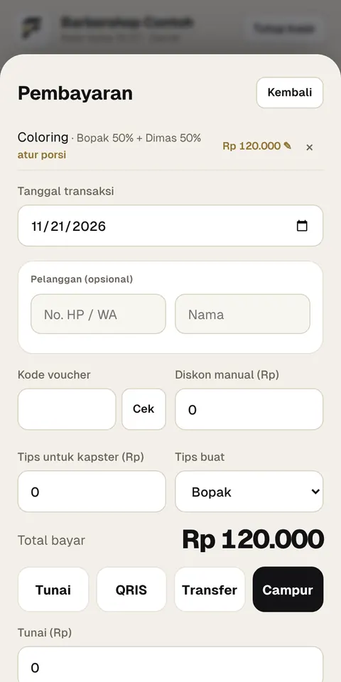

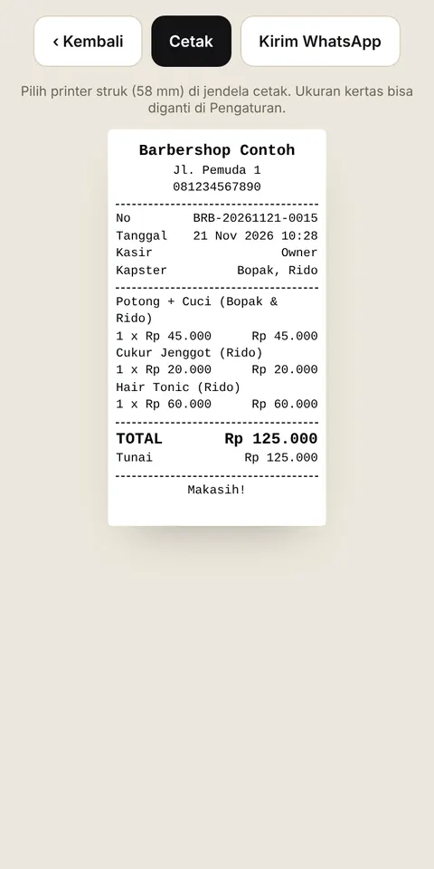
02 · Komisi, gaji & kapster
Aturan komisi bisa beda-beda, BarberApp yang ngitung. Akhir minggu atau akhir bulan, tinggal bayar dan kirim slip.

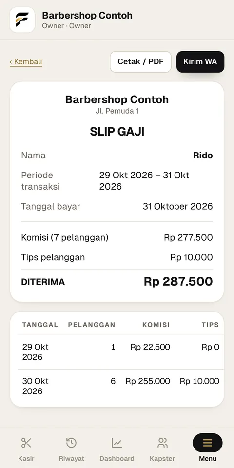
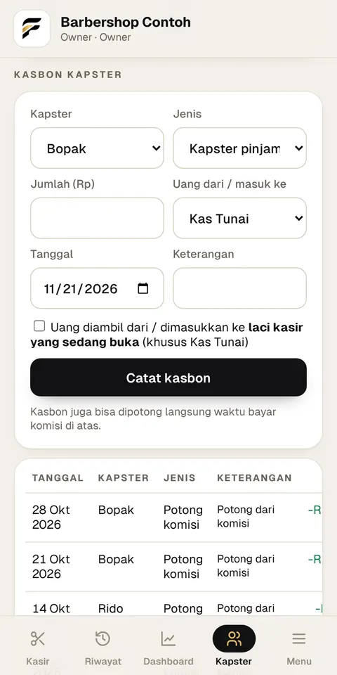

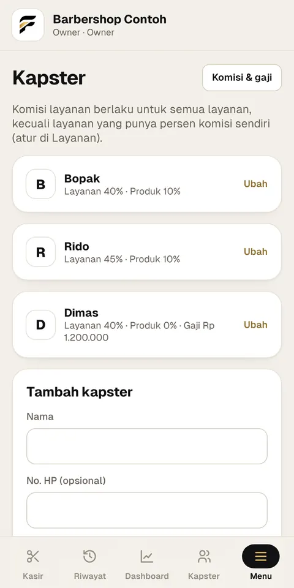
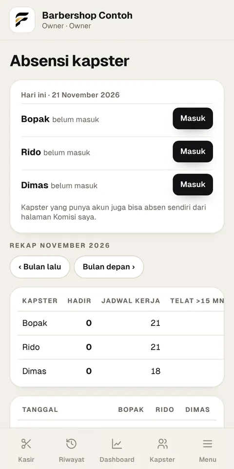
03 · Laci kasir
Aplikasi ngitung berapa yang seharusnya ada di laci. Kasir tinggal hitung uang fisik, hasilnya: pas, kurang, atau lebih.
04 · Antrian & booking online
Antrian walk-in dan booking online jadi satu daftar, per kapster, lengkap dengan estimasi waktu tunggu.

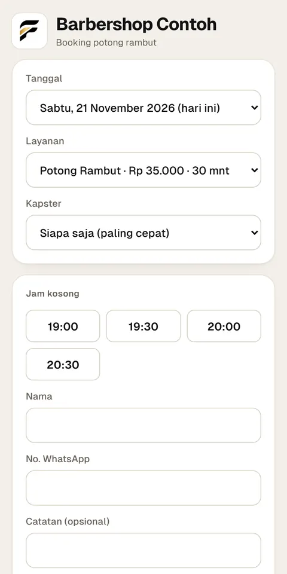
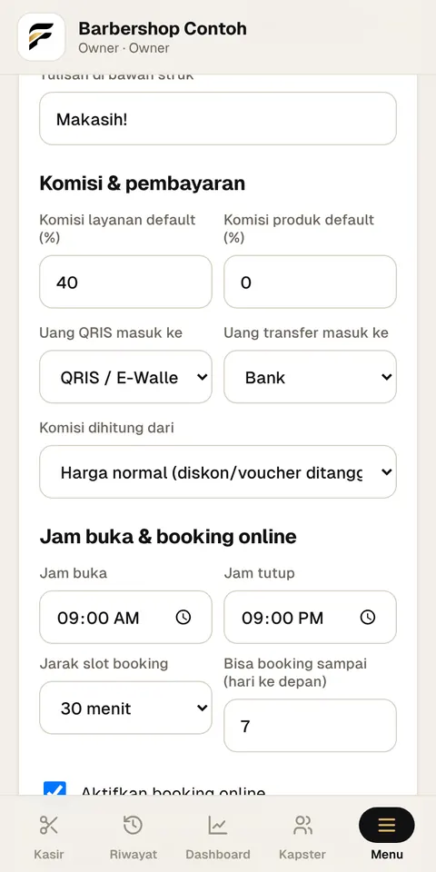
05 · Stok produk & bahan
Produk yang dijual dan bahan yang dipakai ke pelanggan dipisah, jadi modal dan laba tetap bener.
06 · Pelanggan, member & promo
Data pelanggan kesimpen otomatis tiap nomor HP diisi di kasir: berapa kali datang, total belanja, kapan terakhir datang.
07 · Uang & pembukuan
Tiap catatan otomatis jadi jurnal pembukuan double-entry di belakang layar. Kamu gak perlu ngerti akuntansi.
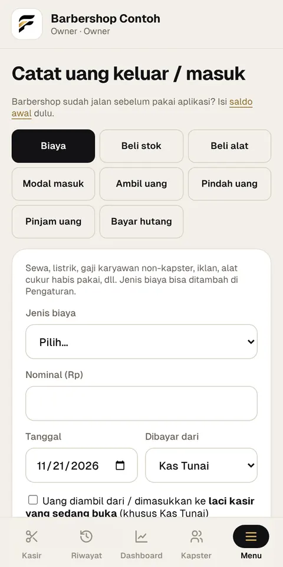
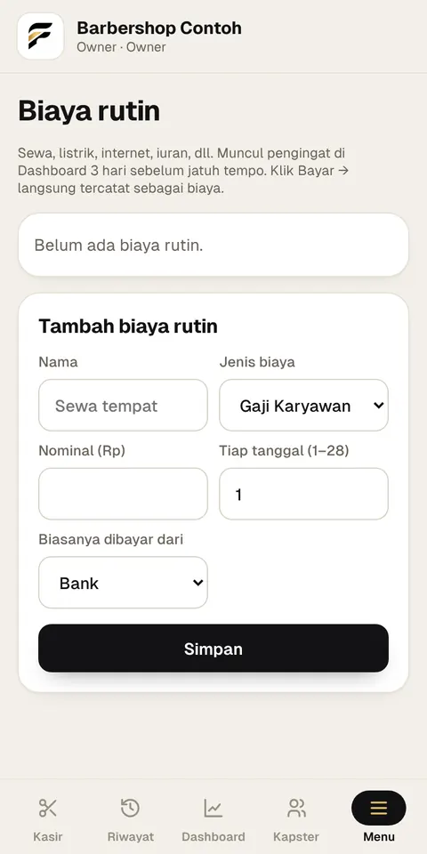
08 · Dashboard & laporan
Dashboard buat dicek tiap malam, laporan lengkap buat akhir bulan. Semua laporan bisa di-export ke PDF & Excel.
09 · Akun, keamanan & cabang
Semua transaksi tercatat atas nama yang login, dan owner yang atur siapa boleh ngapain.
Export laporan
Sekali tekan, laporan langsung jadi file. Rapi buat arsip, siap dikirim ke investor atau akuntan, dan angkanya bisa diolah lagi. Bisa dari HP, tablet, atau laptop.
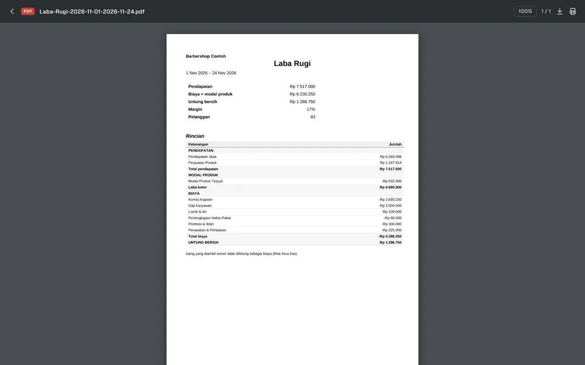
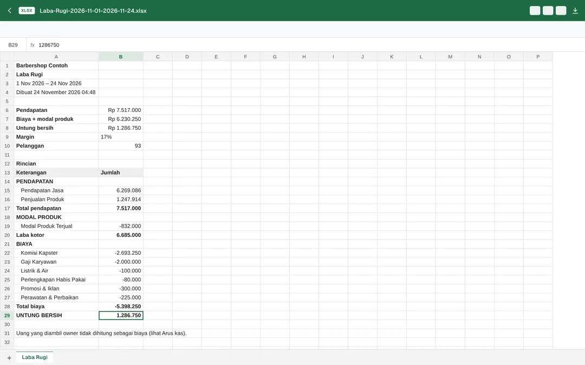
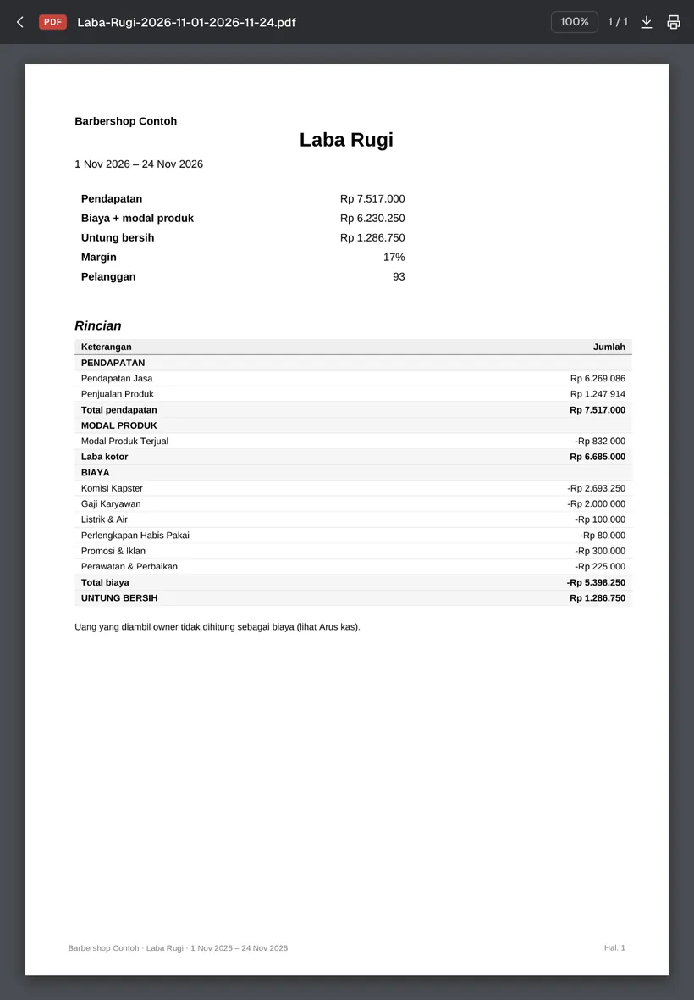
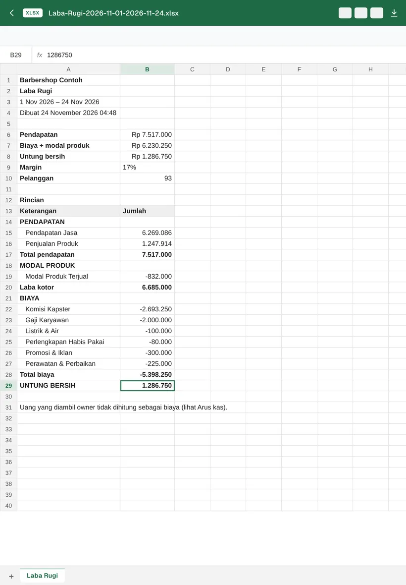
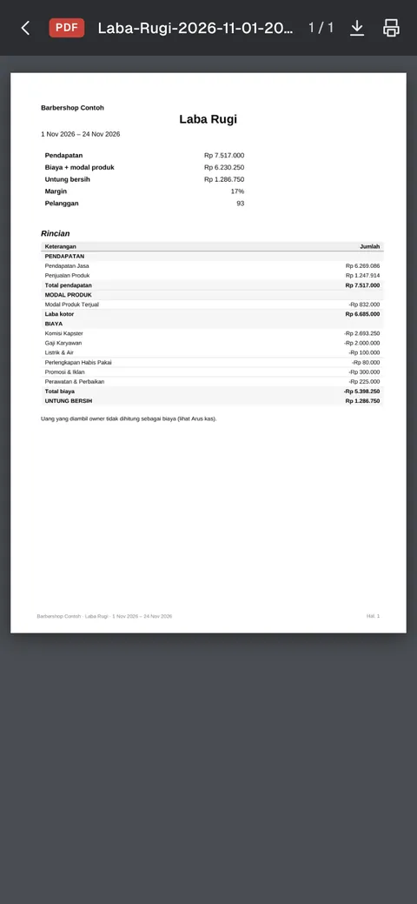
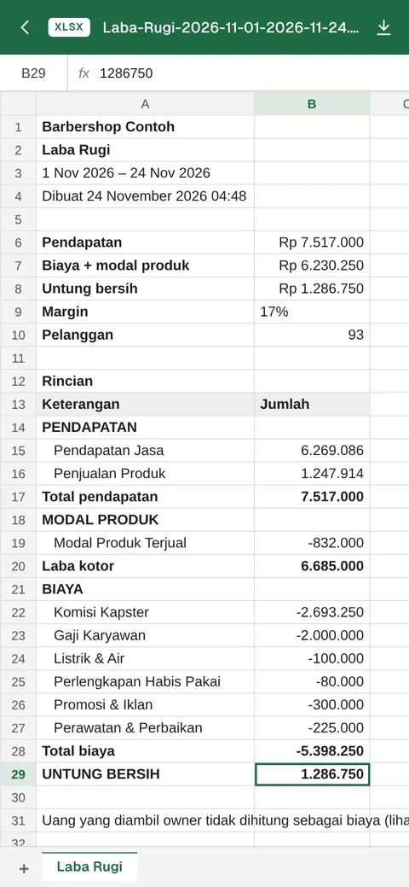
Contoh hasil export asli dari BarberApp: laporan Laba Rugi 1–24 Nov 2026. Nama toko disamarkan.
Satu akun, semua perangkat
Kasir pakai HP atau tablet di meja depan, owner pantau dari laptop atau dari mana aja. Datanya satu, sama persis.


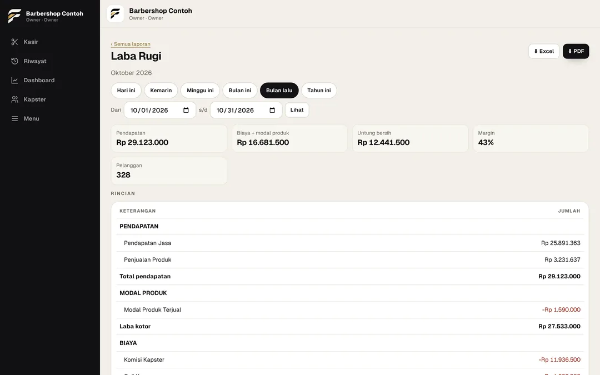
Hak akses
Owner yang atur. Hak akses bisa ditambah atau dikurangi per orang.
Owner
Pemilik
Semua fitur, termasuk backup, langganan, dan saldo awal. Pantau dari mana aja.
Admin
Kepala toko
Kasir, diskon, ubah harga, batalkan transaksi, kelola kapster, layanan, dan produk.
Keuangan
Yang pegang uang
Dashboard, laporan, catat uang, bayar komisi & gaji.
Kasir
Penjaga kasir
Kasir, antrian, absensi, dan riwayat. Menunya sedikit, jadi gak bingung.
Kapster
Tukang cukur
Cuma halaman komisinya sendiri: komisi, target, dan absen. Gak bisa lihat data lain.
Investor
Pemodal
Lihat dashboard & laporan aja, gak bisa input apa pun.
Contoh kejadian
Diambil dari contoh kasus di panduan BarberApp.
Layanan Rp120.000, kapster A ngerjain lebih banyak, kapster B bantu. Porsi diatur 60:40.
HasilnyaOmzet tercatat sekali Rp120.000. Komisi (40%) dibagi otomatis: Rp28.800 dan Rp19.200.
Seharusnya Rp3.600.000, pas dihitung cuma Rp3.580.000.
HasilnyaTercatat kurang Rp20.000 atas nama kasir yang nutup. Owner lihat di Dashboard.
Owner ambil Rp500.000 buat keperluan pribadi.
HasilnyaDicatat sebagai ambil uang owner, bukan biaya. Laba gak berkurang, laci tetap pas.
Komisi Rp955.000 + tips Rp40.000 + bonus Rp50.000, potong kasbon Rp100.000 dan telat 2x Rp20.000.
HasilnyaKapster terima Rp925.000, sisa kasbon berkurang, slip gaji langsung dikirim ke WA-nya.
Panduan lengkap
Tiap pengguna BarberApp dapat Panduan Pengguna lengkap: semua fitur dijelasin dari nol, plus contoh kasus yang biasa kejadian di barbershop.
Plus: setup dibantu sampai jalan. Akun dibuatin, data kapster, layanan, dan harga dibantu input.
Coba Gratis + Dapat Panduan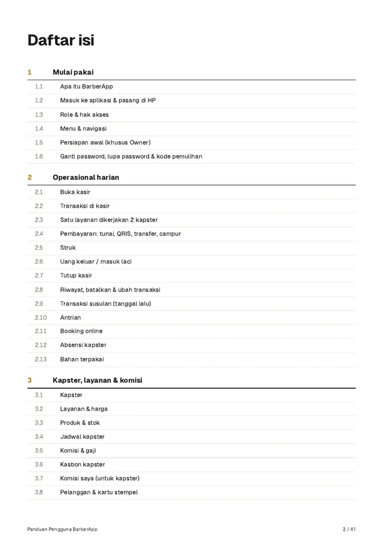
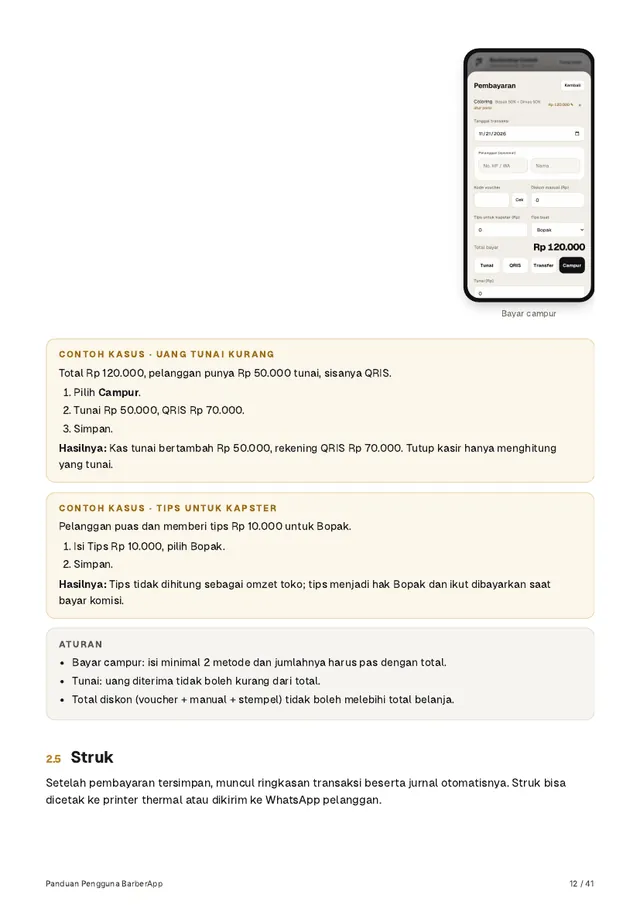
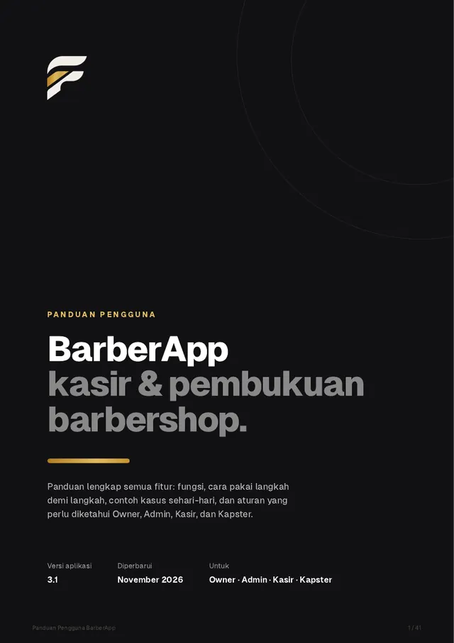
Cara mulai
Klik tombol Coba Gratis, sebutin nama barbershop kamu.
Kapster & komisinya, layanan & harga, produk, akun kasir. Kami bantu input sampai siap, plus kamu dapat panduannya.
Buka di HP atau laptop. Buka kasir, terima pelanggan, laporan jalan sendiri.
Harga
Mulai dengan gratis 14 hari. Pilih paket kalau udah cocok.
Rp99.000/bulan
Fleksibel, bisa berhenti kapan aja.
Paling Hemat
Rp990.000/tahun
Bayar 10 bulan, dapat 12 bulan.
Rp2.500.000
+ perawatan Rp300.000/tahun mulai tahun ke-2.
Cabang tambahan +50% dari harga paket. Harga belum termasuk printer struk. Bayar lewat transfer bank atau QRIS.
Iya, BarberApp jalan online. Tapi ringan, kuota yang dipakai kecil. Sinyal HP biasa udah cukup.
Bisa semua, dibuka lewat browser (Chrome/Safari). Di HP bisa dipasang di layar utama, jadi kebuka kayak aplikasi biasa. Di laptop, menunya pindah ke samping biar lega.
Bisa. Kasir cukup pakai kasir, owner cukup catat uang keluar. Jurnal, laba rugi, neraca, dan arus kas jadi sendiri.
Nggak. Akun kapster cuma bisa lihat komisinya sendiri, target, dan absen. Owner yang atur hak akses tiap orang.
Data di-backup otomatis tiap hari, 7 backup terakhir disimpan, dan file backup-nya bisa dikirim ke Telegram kamu. Kamu juga bisa download backup kapan aja. Transaksi gak pernah dihapus, cuma dibatalkan dengan alasan, jadi ada jejaknya.
Data tetap milik kamu dan backup-nya bisa didownload. Kalau masa aktif habis, aplikasi terkunci sampai diperpanjang, tapi datanya tetap aman dan kembali utuh.
Ada fitur saldo awal: isi uang kas, saldo bank & QRIS, stok, peralatan, kasbon, dan hutang saat mulai pakai. Dari situ laporan langsung nyambung. Kami bantu ngisinya.
Bisa. Tiap cabang punya kasir, kapster, dan stok sendiri. Owner bisa pindah cabang sekali klik dan lihat laporan gabungan. Cabang tambahan dikenakan 50% dari harga paket.
Gak wajib, struk bisa dikirim ke WA pelanggan. Kalau mau cetak, bisa pakai printer thermal 58 mm atau 80 mm. Harga paket belum termasuk printer.
Ada panduan pengguna lengkap (41 halaman) buat Owner, Admin, Kasir, dan Kapster. Setup juga dibantu sampai jalan: akun dibuatin, data kapster, layanan, dan harga dibantu input.
Bisa. Semua laporan (laba rugi, neraca, arus kas, rekap penjualan, komisi, stok, dan lainnya) bisa di-export ke PDF dan Excel untuk periode apa pun. PDF-nya rapi buat dikirim atau dicetak, Excel-nya bisa diolah lagi.
Transfer bank atau QRIS.
Gratis, dibantu setup sampai jalan, dapat panduan lengkap. Tinggal chat.
Coba Gratis 14 HariTombol ini langsung buka chat WhatsApp.